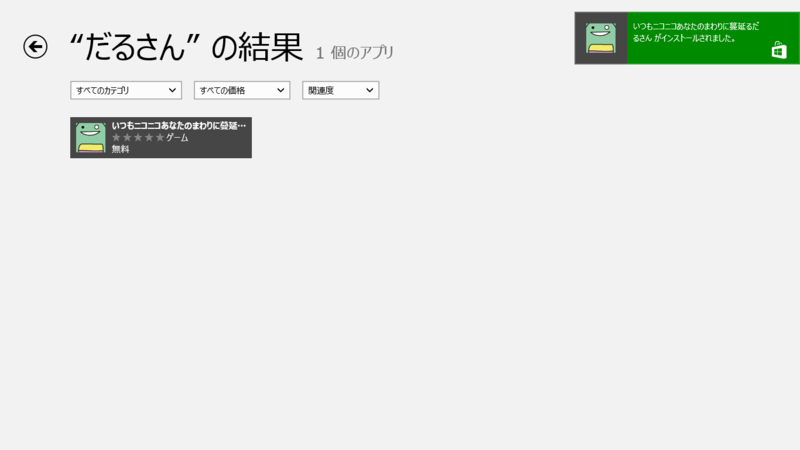

Windows 8に癒しと熱狂をもたらす爽快な刈り取りゲーム「いつもニコニコあなたのまわりに蔓延るだるさん」
公開日：

「いつもニコニコあなたのまわりに蔓延（はびこ）るだるさん」は、Twitterで今ブレーク中の癒し系マスコットキャラクター“だるやなぎ”を好きなだけ刈り取れるゲームアプリ。現在、Windows 8の「ストア」アプリ（Windows ストア）から無償でダウンロードできる。

“だるやなぎ”は、いつもTwitterでだるだるしている特別天然記念物。一部の心無い人達によって「ホモ」呼ばわりされても笑顔を忘れず、常に明るく健気に自分を貫いて生きる姿が共感を呼び、今、癒し系キャラクターとして女子高生・女子大生・OLを中心に人気を得つつある。
本アプリは、画面上の“だるやなぎ”をタップして収穫していくだけのゲーム。“だるやなぎ”が枯渇したら、左下の［ふれっしゅだるさん！］ボタンをタップしてみよう。再び画面いっぱいに“だるやなぎ”が生えてくる。この濃厚な“だるやなぎ”密度が本アプリの醍醐味。自然溢れる背景画像も相まって、あたかも森林浴を愉しんでいるかのような癒しが得られる。
ゲーム自体は一見単純だが、指の動きを工夫することでいくらでも刈り取りスピードを上げていけるところが意外に奥深い。刈り取りの際の効果音“だるーん”が快楽中枢をダイレクトに刺激するので、ついついハマってしまう。

本アプリをインストールするには、Windows 8の「ストア」で“だるさん”と検索すればよい。執筆時現在、アプリの評価は5段階中“5”をキープしており、高い評価を得ていることがわかる。
なお、本アプリを開発したのは『Windows8 UI/UXデザイン入門』（『みつばたんの薄い本』 - だるろぐ）で著名なみつばたん氏。Windows8 スタイルのデザインセンスを身に着けたいならば、ぜひ本アプリを体験しておきたい。

Windows8UI/UXデザイン入門code name Metro
- 作者: 泉本優輝,吉竹遼
- 出版社/メーカー: 秀和システム
- 発売日: 2012/09/11
- メディア: 単行本
- 購入: 5人 クリック: 109回
- この商品を含むブログ (7件) を見る
ソフトウェア情報
【著作権者】みつばたん 氏
【対応OS】Windows 8（x86、x64）
【ソフト種別】フリーソフト
【バージョン】‐（12/10/25）